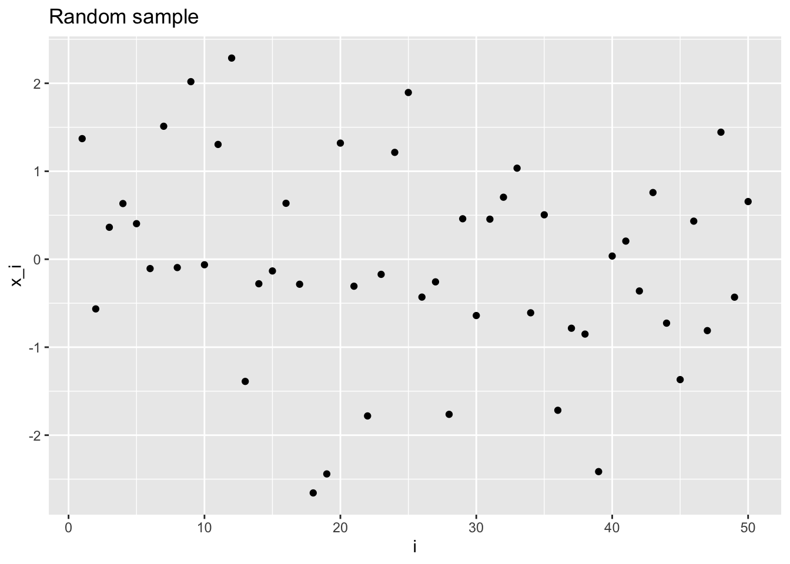
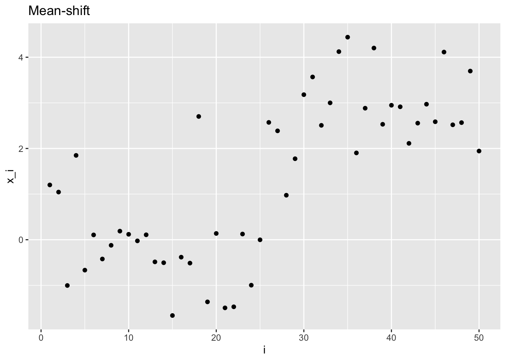
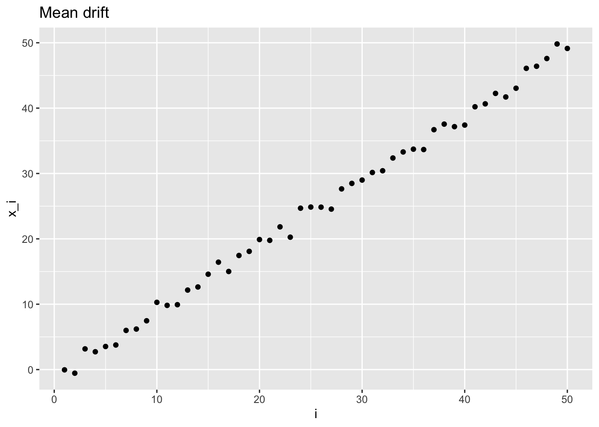
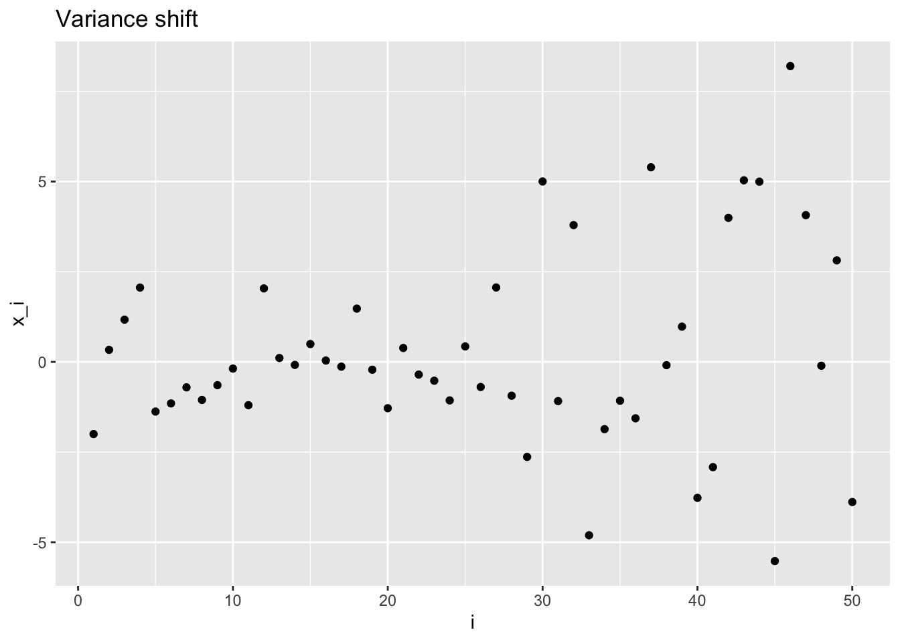
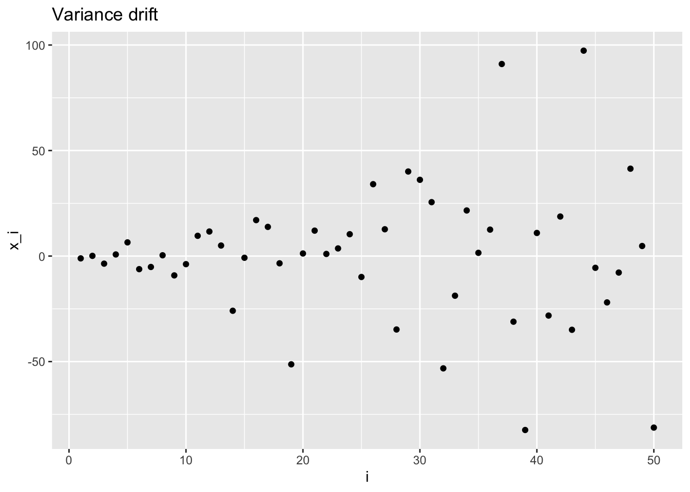
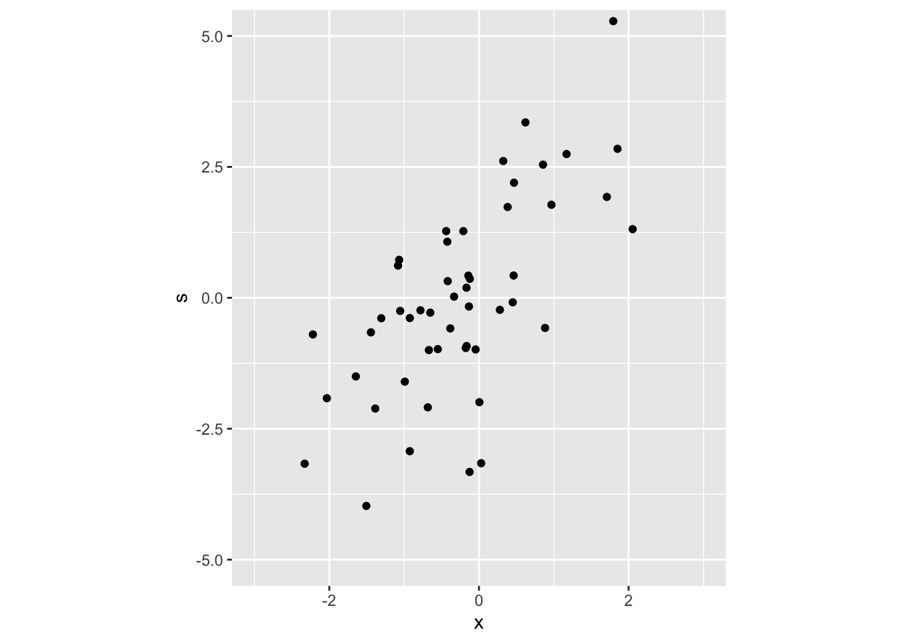
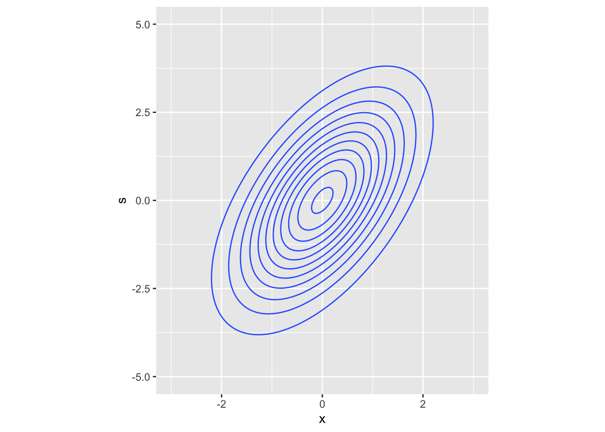

Chapter 3 Normal sampling
3.1 Random and non-random normal samples
First we look at the simplest case: independent and identically distributed Normal random variables.
\[ \mathbf{X} \sim \mathcal{N}\left( \begin{pmatrix} \mu \\ \vdots \\ \mu \end{pmatrix}, \begin{pmatrix} \sigma^2 & & & & \\ & & & 0 & \\ & & \ddots & & \\ & 0 & & & \\ & & & & \sigma^2 \end{pmatrix} \right) \]
In order to simulate a sample of i.i.d. Normal r.v.,
we need to call the rnorm function, which uses R pseudo-random number generator.
Like every pseudo-RNG, it allows for specifying a seed, that
is useful for reproducibility purposes
(see pseudo-RNG wiki for
more details).
This is how you can simulate a sample with \(n = 50\) i.i.d. Normal random variables in R.
set.seed(42) # for reproducibility
library(ggplot2) # plotting
library(dplyr) # dataframe manipulation
library(tibble) # tibble
n <- 50
rnorm_sample <- rnorm(n) # mu = 0, sigma = 1, for instance
iidplt <- rnorm_sample %>%
enframe() %>% # creates tibble with name,value columns
ggplot() +
geom_point(aes(x = name, y = value)) +
labs(title = "Random sample") + # add title and labels to the plot
xlab("i") +
ylab("x_i")
iidplt
If the random variables are independent but distributed with different mean, we can identify two notable cases: mean shift and mean drift.
In the first case, we write
Mean shift: \[ \mathbf{X} \sim \mathcal{N}\left( \begin{pmatrix} \mu_0 \\ \vdots \\ \mu_0 \\ \mu_1 \\ \vdots \\ \mu_1 \end{pmatrix}, \begin{pmatrix} \sigma^2 & & & & \\ & & & 0 & \\ & & \ddots & & \\ & 0 & & & \\ & & & & \sigma^2 \end{pmatrix} \right)\,, \]
and in R we can simulate such sample as follows
# (optional) creates a function to simplify other plots
plot_sample <- function(x, title = NULL, xlab = NULL, ylab = NULL) {
plt <- x %>%
enframe() %>%
ggplot(aes(x = name, y = value)) +
geom_point() +
labs(title = title) +
xlab(xlab) +
ylab(ylab)
return(plt)
}
# first half with mean = 0, second half with mean = 3
# simulate by concatenating two rnorm samples
ms_sample <- c(rnorm(floor(n / 2)), rnorm(n - floor(n / 2), 3))
# or equivalently, by concatenating two mean vectors in one rnorm call
ms_sample <- rnorm(n, mean = c(
rep(0, floor(n / 2)),
rep(3, n - floor(n / 2))
))
# save the plot in a variable for later use
msplt <- plot_sample(ms_sample, "Mean-shift", "i", "x_i")
msplt
For the mean drift, the mean changes variable by variable
Mean drift: \[ \mathbf{X} \sim \mathcal{N}\left( \begin{pmatrix} \mu_1 \\ \mu_2 \\ \vdots \\ \mu_n \end{pmatrix}, \begin{pmatrix} \sigma^2 & & & & \\ & & & 0 & \\ & & \ddots & & \\ & 0 & & & \\ & & & & \sigma^2 \end{pmatrix} \right)\,, \]
Similarly, in R, we can simulate a mean drift with mean going from \(0\) to \(n-1\) with unitary step.
# mean is a range vector
md_sample <- rnorm(n, 0:(n - 1))
mdplt <- plot_sample(md_sample, "Mean drift", "i", "x_i")
mdplt
The same concept is applied also to random variables drawn by a normal with changing variance.
Variance shift: \[ \mathbf{X} \sim \mathcal{N}\left( \begin{pmatrix} \mu \\ \vdots \\ \mu \end{pmatrix}, \begin{pmatrix} \sigma_0^2 & & & & & \\ & \ddots & & & 0 & \\ & & \sigma_0^2 & & & \\ & & & \sigma_1^2 & & \\ & 0 & & & \ddots & \\ & & & & & \sigma_1^2 \end{pmatrix} \right)\,, \]
in R:
vs_sample <- c(
rnorm(floor(n / 2)), # first half
rnorm(n - floor(n / 2), sd = 4)
) # second half
vsplt <- plot_sample(vs_sample, "Variance shift", "i", "x_i")
vsplt
Variance drift
\[ \mathbf{X} \sim \mathcal{N}\left( \begin{pmatrix} \mu \\ \vdots \\ \mu \end{pmatrix}, \begin{pmatrix} \sigma_1^2 & & & & \\ & & & 0 & \\ & & \ddots & & \\ & 0 & & & \\ & & & & \sigma_n^2 \end{pmatrix} \right)\,, \]
in R:
vd_sample <- rnorm(n, sd = 1:n)
vdplt <- plot_sample(vd_sample, "Variance drift", "i", "x_i")
vdplt
3.2 Exchangeable normal random variables
Let \(\mathbf{X} = (X_1, ..., X_n)\) be a random vector whose elements follow the conditional distribution \[ X_i | \mu \sim \mathcal{N}(\mu, \sigma^2) \] with \(\mu\) being another normally distributed r.v. \[ \mu \sim \mathcal{N}(\mu_0, \sigma_0^2)\,. \]
\(X_i\) are conditionally independent given \(\mu\), and also, their joint distribution is equal for any permutation of the random vector elements (exchangeable). But if we don’t know \(\mu\), what is the distribution of \(X_i\) (marginal distribution)?
It’s
\[ \mathbf{X} \sim \mathcal{N}\left(\begin{pmatrix} \mu_0 \\ \vdots \\ \mu_0 \end{pmatrix}, \begin{pmatrix} \sigma^2 + \sigma_0^2 & & & & \\ & \ddots & & \sigma_0^2 & \\ & & \ddots & & \\ & \sigma_0^2 & & \ddots & \\ & & & & \sigma^2 + \sigma_0^2 \end{pmatrix} \right) \]
Exercise: prove it (i.e. find expected value, variance and covariance).
Hint: \(E[X_i] = E_{f\sim \mu}[E_{f\sim X_i | \mu}[X_i | \mu]]\)
In R, we simply simulate a realization of the mean r.v., then use that value to simulate the \(\mathbf X\) Normal sample given \(\mu\).
mu <- rnorm(1)
x <- rnorm(n, mu)3.3 Multivariate Normal random samples
Multivariate normal distribution functions are provided by the mvtnorm library.
Take this as an example:
\[ \begin{pmatrix} X \\ S \end{pmatrix} \sim \mathcal{N} \left( \begin{pmatrix} 0 \\ 0 \end{pmatrix}, \begin{pmatrix} 1 & 1 \\ 1 & 3 \end{pmatrix} \right) \]
# install.packages("mvtnorm")
library(mvtnorm)
# simulate n bivariate normal r.v.
m <- rep(0, 2) # mean vector
vcov_mat <- matrix(c(1, 1, 1, 3), nrow = 2) # Sigma
# specify mean vector and var-cov matrix
bvt_samples <- mvtnorm::rmvnorm(n, m, vcov_mat)
head(bvt_samples, 10) # print only the first 10 elements## [,1] [,2]
## [1,] -0.78186845 -0.2389248
## [2,] -0.17599524 -0.9582082
## [3,] -0.92364519 -0.3863103
## [4,] 1.17077708 2.7456040
## [5,] -2.03263913 -1.9171945
## [6,] -0.92418665 -2.9286612
## [7,] -0.99088212 -1.6003554
## [8,] -1.50519809 -3.9739964
## [9,] -0.04465341 -0.9858018
## [10,] 1.70934985 1.9264325Let’s plot this sample
bvt_samples_df <- tibble(x = bvt_samples[, 1], s = bvt_samples[, 2])
bvt_scatter <- bvt_samples_df %>%
ggplot() +
geom_point(aes(x, s)) +
coord_fixed(xlim = c(-3, 3), ylim = c(-5, 5), ratio = -.7)
bvt_scatter
# plot the true distribution
# generate a grid (many points with fixed space between them)
bvt_grid <- expand.grid(
x = seq(-3, 3, length.out = 200), # seq builds a sequence vector starting from
# 3 until 3 with step such that the number of elements in the vector is 200
s = seq(-4, 4, length.out = 200)
)
# compute the density at each coordinate of the grid
probs <- dmvnorm(bvt_grid, m, vcov_mat)
bvt_grid %>%
mutate(prob = probs) %>% # add a column (?dplyr::mutate)
ggplot() +
geom_contour(aes(x, s, z = prob)) + # or geom_contour_filled
coord_fixed(xlim = c(-3, 3), ylim = c(-5, 5), ratio = -.7)
3.3.1 Exercises
Take two bivariate random variables (the same as before, \(X, S\)). Complete these tasks:
- Compute \(P(X < 0 \cap S < 0)\) with
pmvnorm - Compute \(P(X < 0 \cap S< 0)\) by simulation (Monte Carlo estimate)
- Compute \(P(X > 1 \cap S < 0)\) by simulation. Can you do it with
pmvnorm? (hint: check?pmvnorm)
3.3.2 Solutions
pmvnorm(upper = c(0, 0), mean = m, sigma = vcov_mat)## [1] 0.3479566
## attr(,"error")
## [1] 1e-15
## attr(,"msg")
## [1] "Normal Completion"sim <- rmvnorm(100000, mean = m, sigma = vcov_mat) # simulate enough samples
# count all the observations satisfying the condition
# and divide by the number of total obs to obtain a ratio
# mean() applied to logical values is the proportion of true vars
mean(sim[, 1] < 0 & sim[, 2] < 0)## [1] 0.34856mean(sim[, 1] > 1 & sim[, 2] < 0)## [1] 0.0238# use lower and upper limits as described in the pmvnorm docs
pmvnorm(lower = c(1, -Inf), upper = c(Inf, 0), mean = m, sigma = vcov_mat)## [1] 0.0240375
## attr(,"error")
## [1] 1e-15
## attr(,"msg")
## [1] "Normal Completion"Increasing the Monte Carlo samples you will get a more accurate estimate of the probability measure.